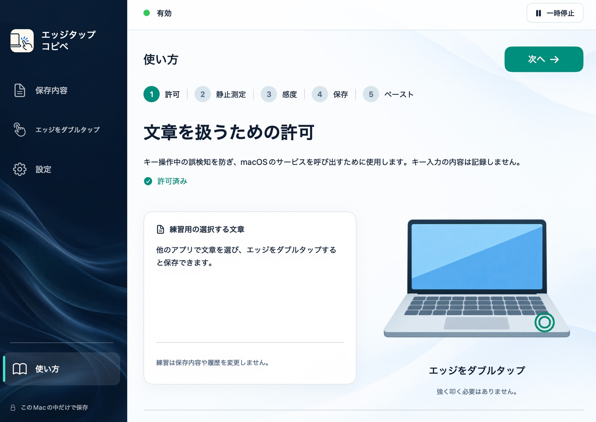
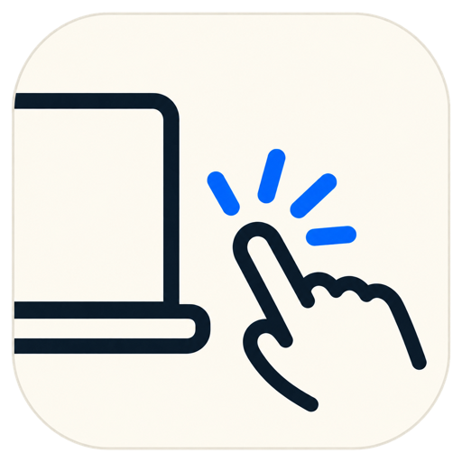

macOS アプリケーション
エッジを
ダブルタップ。
文章を選んで、2回タップ。保存から入力まで、直感的に。
かんたんな使い方


EdgeTapCopipemacOS アプリケーション
文章を選んで、2回タップ。保存から入力まで、直感的に。
かんたんな使い方

HOW IT WORKS
文章を選んで保存し、必要な場所で呼び出します。
対応するアプリで、保存したい文章を選択します。
基本はダブルタップ。選択中の文章が専用枠に保存されます。
入力位置を選び、本体をタップ。保存した文章を対応欄へ入力します。
メニューバーから保存内容や履歴を確認でき、文章の消去や一時停止も行えます。
YOUR TEXT, YOUR MAC
選択して保存した文章と履歴は、このMacのユーザー領域に保存されます。Firebase Analyticsでアプリの利用状況を計測しますが、文章やセンサー測定値をAnalyticsへ送る処理はありません。アクセシビリティ許可は、選択した文章の取得と保存文章の入力に使います。
プライバシーポリシーを読むREQUIREMENTS
入力連携は、文字情報を公開する対応欄で動作します。すべてのアプリや入力欄での動作を保証するものではありません。パスワード欄などの保護された入力欄では操作しません。ほかのMac機種でのセンサー動作は確認中です。